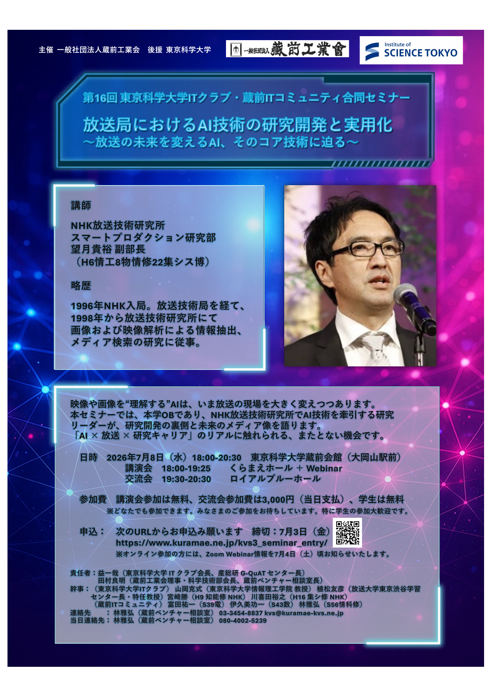

放送局におけるAI技術の
研究開発と実用化
～放送の未来を変えるAI，そのコア技術に迫る～
| No. | 作業項目 | 期日 | 説明 | 責任者 | 補佐 | 備考 |
|---|---|---|---|---|---|---|
| 1 | 施設予約 | 3/14 | くらまえホール、ロイアルブルー | 林(雅) | ||
| 2 | 講師調整 | 3/14 | 1講演 | 林(雅) | 川喜田→NHK望月 | |
| 3 | 名義使用許可 | 4/4 | 許可手続き | 林(雅) | 東京科学大学総務申請 | |
| 4 | セミナー案内 | 4/10 | 蔵前ジャーナル投稿 | 林(雅) | 川喜田 | 初夏号（発行6/1、締切4/10） |
| 5 | 分担表 | 4/22 | 作成 周知・調整 | 林(雅) | ||
| 6 | フライア作成 | 4/30 | 林(雅) | 川喜田→NHK望月 | ||
| 7 | HP案内 | 4/30 | （フライアが必要） | 林(雅) | ||
| 8 | HP案内（本部） | 4/30 | （フライアが必要） | 林(雅) | 工業会HPに掲載依頼 | |
| 9 | イベントネット申請 | 4/30 | 林(雅) | |||
| 10 | 謝金 | 4/30 | 講師謝金 振込先 | 林(雅) | 山岡先生 | |
| 11 | 案内状 | 4/30 | 作成、発信（KVSメール発信） | 林(雅) | 根木 | TITC：山岡、宮崎、川喜田 |
| 12 | 参加者勧誘 | 4-5月 | 送信先リストに基づき実施 | 林(雅) | 根木 | TITC：山岡、宮崎、川喜田 |
| 13 | 交流会申込 | 5/9 | 生協との調整、発注数の予約 | 林(雅) | 福岳 | 60名仮発注、7/6までに数量確定 |
| 14 | 学生分科会依頼 | 5/9 | 4名想定 | 長谷川 | ||
| 15 | ポスター作成 | 5/9 | 林(雅) | |||
| 16 | ポスター掲示（A3） | 5/9 | 田町4、大岡山3、すずかけ台1 | 根木 | 蛭田 | |
| 17 | 電子掲示板 | 5/9 | 総務部・工学部電子掲示板 | 林(雅) | 山岡先生支援 | |
| 18 | Zoom Webinar契約 | 6/10 | 長谷川 | |||
| 19 | 講師顔合わせ | 6/11 | 林(雅) | 17:00〜18:00 | ||
| 20 | 中間参加者確認 | 6/20 | 林(雅) | |||
| 21 | 駐車場申込 | 6/20 | 東京科学大学総務部 | 林(雅) | ||
| 22 | 名札ケース・薔薇章手配 | 6/30 | 蔵前工業会事務局と調整 | 根木 | 蛭田 | |
| 23 | 来賓リスト・連絡 | 6/30 | 人選配慮 | 林(雅) | TITC：山岡、川喜田 | 辻井先生（TITC創設者） |
| 24 | 交流会調整 | 6/30 | 生協との調整、発注数確定 | 林(雅) | 西山 | |
| 25 | Zoom Webinar準備 | 7/3 | Webinar、アンケートフォーム作成 | 福岳 | 林(雅) | パネリスト招待、一般向けURL確定 |
| 26 | 参加者締切 | 7/4 | 林(雅) | |||
| 27 | 参加者へのURL送付 | 7/4 | 林(雅) | |||
| 28 | 会場下見・リハーサル | 7/2 | プレゼン機器、照明、Zoom対応 | 林(雅) | 長谷川、小川、福岳、金田、根木、西山 | 17:00集合、18:00〜講師リハ |
| 29 | 参加者名簿 | 7/8 | 受付用名簿（五十音順） | 林(雅) | 福岳 | TITC：川喜田 |
| 30 | 領収書準備 | 7/8 | 林(雅) | 福岳 | 工業会名 | |
| 31 | 名札作成 | 7/8 | 林(雅) | 福岳 | ||
| 32 | アンケート（紙）準備 | 7/8 | 林(雅) | 福岳 |
| No. | 作業項目 | 期日 | 説明 | 責任者 | 補佐 | 備考 |
|---|---|---|---|---|---|---|
| 1 | 集合 | 7/8 | 16:00集合 | 伊久美、富田、林(雅)、小川、福岳、三谷、長谷川、蛭田、根木、鈴木、山戸、西山、林(保)、谷、KDDI川喜田・他2名、学生4名 | ||
| 2 | 会場予約票 | 7/8 | 当日持参、鍵入手 | 林(雅) | ||
| 3 | 配布資料持参 | 7/8 | KVS紹介資料、開催案内 | 根木 | 80部持参 | |
| 4 | ↑ | 7/8 | 出席者名簿（講演会） | 林(雅) | 福岳 | |
| 5 | ↑ | 7/8 | 出席者名簿（交流会） | 林(雅) | 福岳 | |
| 6 | 会場設営 | 7/8 | 照明、プレゼン機器、マイクetc | 林(雅) | 山戸、林(保) | 学生1, 2 |
| 7 | 看板設置 | 7/8 | 根木 | 学生1, 2 | ||
| 8 | Zoom対応 | 7/8 | 有線/無線LAN、PC、カメラ | 福岳 | 小川、金田、長谷川 | パソコン（4F事務局から借用） |
| 9 | 受付用品手配 | 7/8 | 名札（名札ケース、薔薇章） | 蛭田 | 鈴木、西山 | 学生3, 4 |
| 10 | 受付 | 7/8 | 受付机設置 | 蛭田 | 鈴木、西山、KDDIメンバ | 学生2, 3, 4 |
| 11 | ↑ | 7/8 | 受付業務（16:30受付開始） | 蛭田 | 鈴木、西山、KDDIメンバ | 学生2, 3, 4 |
| 12 | ↑ | 7/8 | 会費徴収/領収書 | 三谷 | 蛭田 | |
| 13 | 来客対応 | 7/8 | 林(雅)、山岡 | 富村田、伊久美 | ||
| 14 | 講演者略歴（紹介用） | 7/8 | 林(雅) | |||
| 15 | 挨拶（原稿準備） | 7/8 | 開会挨拶（益会長、田村室長） | ご本人 | TITC：山岡先生、KITC：林(雅) | |
| 16 | 司会 | 7/8 | 木村 | 挨拶：益会長（山岡先生調整中）、田村室長 | ||
| 17 | タイムキーパー | 7/8 | 林(雅) | |||
| 18 | Webinar recording | 7/8 | 福岳 | 小川、金田、長谷川 | ||
| 19 | 写真 | 7/8 | 根木 | |||
| 20 | パネルディスカッション | 7/8 | 木村 | Q&A含む、Webinar Q&A機能も利用 | ||
| 21 | 会場の締め | 7/8 | 清掃整理、施錠、鍵返却 | 根木 | 蛭田、杉山 | 鈴木、西山 鍵管理：根木 |
| 22 | 交流会会場 | 7/8 | 設営 | 林(雅) | 西山 | 懇親会の会場設営は生協 |
| 23 | 交流会司会 | 7/8 | 林(雅) | 乾杯：前村事務局長 | ||
| No. | 作業項目 | 期日 | 説明 | 責任者 | 補佐 | 備考 |
|---|---|---|---|---|---|---|
| 1 | 参加者の集計 | 7/10 | 林(雅) | 会場・Zoom参加者（工業会員、学生、一般に分類） | ||
| 2 | アンケート結果集計 | 7/10 | 林(雅) | GoogleForm＋紙回収 | ||
| 3 | 講演録画投稿 | 7/17 | 福岳 | 編集後、本部（金田さん）へ依頼 | ||
| 4 | 名義使用報告書 | 7/17 | 林(雅) | 本部山崎さん経由 | ||
| 5 | 蔵前ジャーナル投稿 | 8/10 | 秋号（発行10/1、締切8/10） | 林(雅) | 木村、川喜田 | 講演録作成：講演者、木村、川喜田 |
| 6 | ホームページ掲載 | 8/10 | KVS、東京科学大学 | 林(雅) | 根木 | 本部にも掲載を依頼 |
